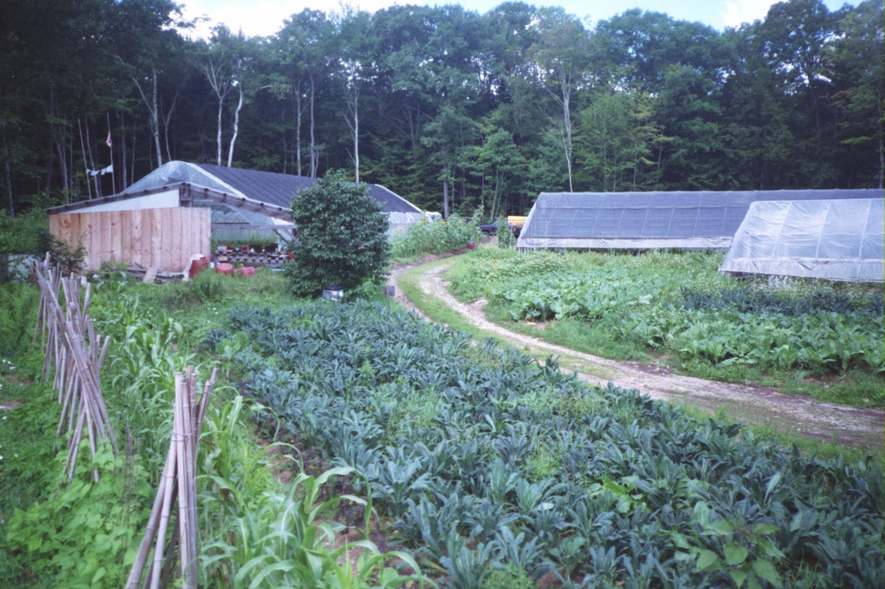

Seeds of Solidarity
Grow Food Everywhere
Community

Seeds of Solidarity is based in the nine-town North Quabbin region of Western/Central Massachusetts. It is rich with natural beauty and hardworking people, and one of the poorest regions in the state. Years ago, the heart of the region was a fertile valley that was flooded to create the Quabbin Reservoir as water supply for Boston. This took the most fertile soil and vibrant livelihoods away. A mill economy supported our working class community for years until globalization took its toll. Seven of the nine towns in the North Quabbin area fall in the bottom fifteen percent of per capita incomes of 351 communities in the state. Free and reduced lunch rates have recently risen to an alarmingly high average of 60% in Orange and Athol, the two most populated towns in the region. Disease and health issues are severe and our region is hard hit by hunger and related social ills such as obesity and Type 2 diabetes.
North Quabbin Community Coalition
Mount Grace Land Conservation Trust
North Quabbin Garlic and Arts Festival
In addition, some of our favorite regional, national and international organizations include:
Community Food Security Coalition
Massachusetts Farm to School Project and the National Farm to School Program
CISA (Community Involved in Sustaining Agriculture)
NOFA: Northeast Organic Farming Association